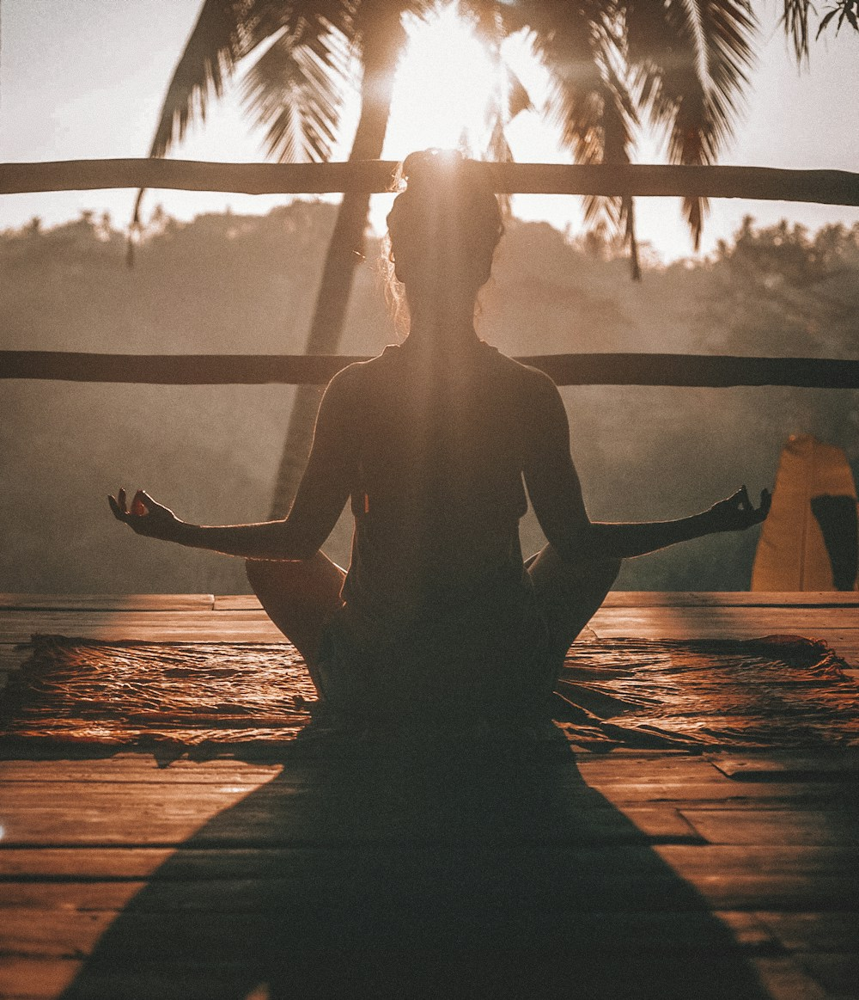
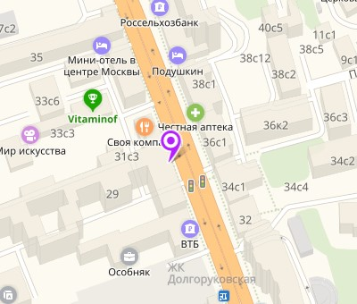

Выбери настроение
Больше движения или больше тишины? Подберём направление под твой запрос.
Оставь городской шум за дверью.
Здесь — движение, дыхание и время для себя.
01 / ПРАКТИКИ
Расписание занятий ↗Не нужно уметь садиться на шпагат.
Достаточно желания начать.
Всё остальное — практика.
НОВОСТИ ЦЕНТРА
Все новости ↗
ЧУТЬ БЛИЖЕ02 / НАШЕ ПРОСТРАНСТВО
Это люди, с которыми спокойно. Место, куда хочется вернуться. И привычка находить время для себя — даже в большом городе.
ЗНАКОМСТВО С ЦЕНТРОМ
О культурном центре ↗Философия, традиции, преподаватели
и направления центра «Просветление».
Сегодня йога — это модно. Йогой занимается весь мир, включая знаменитостей. Однако цели у всех разные. Для одних это разновидность фитнеса, способ совершенствования тела, для других — это средство избавления от стресса или путь к похудению. Есть и те, кто отправляется в клуб йоги для начинающих из-за интереса к философии и постижению высших истин.
Не стоит думать, что йога представляет собой просто эффективную гимнастику. Это учение о психофизическом самосовершенствовании, пришедшее к нам из глубокой ведической древности. Через воздействие на физическую оболочку в ходе регулярных практик удается достичь гармонии и баланса между телом, душой и сознанием. Йога учит осознанности — пониманию себя, своих желаний поступков, внимательному отношению к здоровью. Затем приходит понимание своей истинной природы, обретение чувства спокойной уверенности и гармонии.
Не обязательно отправляться в Индию, чтобы обрести гармонию и освоить уникальную систему самосовершенствования. Достаточно выбрать йога-центр в Москве и записаться на практику. Стремитесь к познанию мира и внутренней гармонии? Тогда приглашаем на занятия в культурный центр «Просветление».
Практика йоги оказывает комплексное воздействие на человека. На физическом уровне происходит восстановление баланса в организме, улучшение обмена веществ, вывод токсинов, нормализация кровообращения. В результате регулярных практик повышается иммунитет, организм омолаживается. Занятия помогают снять напряжение и стресс, избавиться депрессии, бессонницы и головных болей. Йога способствует духовному росту, обретению внутреннего равновесия. Техники концентрации и медитации позволяют упорядочить ментальный хаос, научиться контролировать эмоции. Йога кардинально меняет систему ценностей.
Правильному распределению праны (жизненной энергии) способствуют:
Все это вы сможете постичь в центре духовных практик «Просветление». Наша студия йоги для начинающих в Москве — комфортное место для начала практик под руководством грамотных преподавателей. Занятия подходят для любого уровня подготовки, в том числе для начинающих, беременных, пожилых и детей. У нас работают сертифицированные специалисты, которые помогут раскрыть физический, ментальный и духовный потенциал каждого ученика. Посетите пробное занятие, и вы обязательно захотите продолжить курс йоги
Существует большое количество техник йоги, каждая из которых ведет своим отдельным путем к соединению духовного и физического тела, раскрытию внутреннего потенциала. В основе методик — медитации, пранаямы, выполнение асан, пение мантр. Йога-центр «Просветление» предлагает следующие виды практик:
Еще одним популярным направлением является йога для подростков в Москве, поскольку практика помогает успокоить ум в сложный период гормональной перестройки организма.
Программы проводятся на высоком профессиональном уровне, что исключает любые риски. Все преподаватели центра «Просветление» прошли обучение в Индии или у известных мастеров в России, получили сертификаты, подтверждающие квалификацию, имеют разрешение на практику.
Помимо услуг по программе развития и самопознания мы предлагаем товары из Индии и восточных стран.
Наш этно-магазин «Просветление» - это широчайший ассортимент аксессуаров и изделий. Они помогут вам освоить особенную культуру, которой присуща удивительная по глубине духовность и неповторимый колорит!
Цель работы нашего йога-центра - здоровый образ жизни каждого представителя общества, достижение гармоничного состояния, раскрытие внутреннего потенциала!
Мы приглашаем всех желающих стать частью нашего дружного коллектива, научиться управлять умом и телом, найти единомышленников.
У наших учеников есть выбор утренней, дневной, вечерней группы.
Центр на Новослободской работает с 2006 года. Он включает магазин индийских эзотерических товаров и фито-кафе, и является одним из самых заслуженных в Москве. Йога центр на Аэропорте открылся в 2015 году.
Сможете ли вы заниматься йогой? Безусловно! Это под силу любому человеку, независимо от физического состояния тела, возраста, состояния здоровья, пола.
Вы постепенно пройдете путь от простого к сложному, не испытывая дискомфорта, потому что вас поведет к достижениям опытный преподаватель. Товары в нашем в магазине помогут вам в самопознании, саморазвитии.
Звоните или пишите нам, чтобы получить предварительную консультацию, узнать все про пробное занятие или сразу купить абонемент.
Приходите к нам в любое, удобное для вас время!
ПЕРВЫЙ РАЗ? КАК РАЗ.
Больше движения или больше тишины? Подберём направление под твой запрос.
Посмотри расписание или позвони нам. Поможем выбрать центр и занятие.
Возьми удобную одежду и немного любопытства. Знакомство с йогой начнётся здесь.
03 / СТОИМОСТЬ
ПОНЯТНО. БЕЗ ЛИШНЕГО.Попробуй одно занятие.
А если найдёшь свою практику —
приходи регулярно.
Разовое посещение. Познакомься с практикой, преподавателем и пространством.
При покупке абонемента. Количество занятий и условия уточни у администратора.
Стоимость указана на действующем сайте центра. Актуальные цены и условия подтвердит администратор.
КУЛЬТУРНЫЙ ЦЕНТР «ПРОСВЕТЛЕНИЕ»
Товары из Индии и восточных стран. Литература, одежда, украшения, предметы интерьера, благовония и аксессуары для йоги.
Вегетарианское кафе и фито-бар. Чёрный, зелёный, красный и йога-чай из Индии, восточные сладости, напитки, коктейли, свежевыжатые соки и кофе.
О кафе и меню ↗ТЕОРИЯ ЙОГИ
УЗНАТЬ ЧУТЬ БОЛЬШЕФОТОГАЛЕРЕЯ ЦЕНТРА
Смотреть все фото ↗04 / МЫ РЯДОМ
МОСКВАВыбирай, где тебе удобнее.
Остальное оставь за дверью.

ЕЩЁ НЕМНОГО ЯСНОСТИ
Или просто позвони.
Мы любим знакомиться.
Начать можно без опыта и сложных асан. На занятиях для начинающих постепенно знакомятся с движением и дыханием. Сообщи преподавателю о своём опыте и самочувствии.
Удобную одежду, в которой легко двигаться. Нужен ли свой коврик и что ещё пригодится на выбранной практике, уточни у администратора при записи.
Открой актуальное расписание или выбери центр и позвони администратору. Он подтвердит время, преподавателя и наличие мест.
Да, в центре есть групповые и индивидуальные занятия. Формат, время и стоимость индивидуальной практики можно обсудить с администратором.